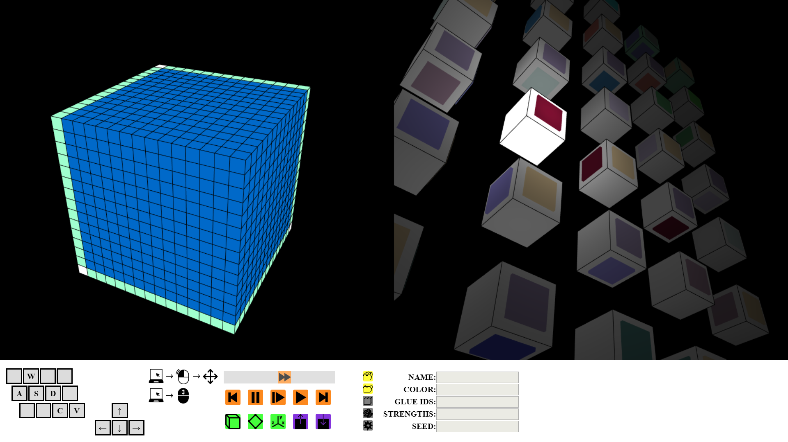

My name is Christian Wendlandt. I'm a graduate of UW-Oshkosh with a bachelor's in Computer Science and Mathematics. I like to play video games in my free time, so (naturally) many of my projects are game related. Taking a concept, figuring out the math to represent it, and then making it interactive is always an enjoyable experience. I also like teaching others; so being able to do so visually, and then seeing an idea 'click' for them is very satisfying.
Below this is a collection of projects that I've completed or am still working on. JavaScript projects are hosted right on gitHub, so they should run on modern browsers by just following the links. Other projects will have varying levels of set up, which is discussed in their README's.
This is a 3D simulator that is programmed with HTML, CSS, and JavaScript; built on top of the WebGL API. This means that is should be able to run on any modern browser and computer with sufficient graphical processing power.
The abstract Tile Assembly Model (aTAM) is a model used by researchers and mathematicians in the field of self-assembly. The model takes a tile set as input and then constructs an assembly tile by tile. Beautiful and intricate constructions can be rendered from tile set files.
 Visualizing constructions can be extremely tedious on a chalkboard and research papers are seldom accompanied by more than a few still images to explain how their constructions work. Being able to hyperlink directly to a simulation would be a strong communication tool, making the sharing of academic knowledge easy and accessible. A demo is preloaded into the simulation, so even if you don't have your own tile set to input, you can still see how it works.
aTAM Simulator